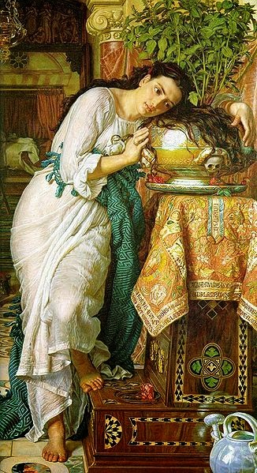
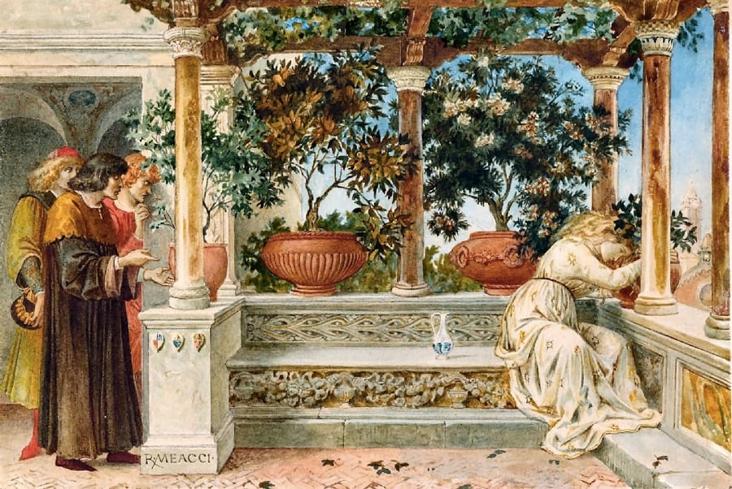

Queste sono solo alcune delle altre opere degne di nota di Boccaccio. Fu uno scrittore prolifico e versatile che diede importanti contributi a una vasta gamma di generi e forme letterarie. "La Gioconda", conosciuta anche come "Lisabetta da Messina", è un dipinto del maestro italiano Giovanni Girolamo Savoldo, realizzato intorno al 1525-1530. Il dipinto è un olio su tela. È conservato alla National Gallery di Londra. Il dipinto raffigura una giovane donna, Lisabetta, che piange la perdita del suo amante, ucciso dai fratelli in una disputa sul suo status sociale. La storia è basata su un racconto tratto dal "Decamerone" di Giovanni Boccaccio, in cui i fratelli di Lisabetta scoprono la sua storia d'amore e, in un impeto di rabbia, uccidono il suo amante e seppelliscono il suo corpo in giardino. Nel dipinto di Savoldo, Lisabetta è raffigurata in una stanza poco illuminata, con una candela accesa nella mano sinistra e lo sguardo rivolto verso un vaso di basilico che contiene la testa mozzata del suo amante. Il vaso è posizionato su una sporgenza di pietra e lo sfondo è un muro scuro e neutro. La luce della candela illumina il viso e le mani di Lisabetta, proiettando una luce soffusa sul vaso e sul muro dietro di lei. Il dipinto è un'esplorazione magistrale di luci e ombre, con la tecnica del chiaroscuro utilizzata con grande effetto. Il contrasto tra le aree chiare e quelle scure crea un senso di profondità e volume, e il sottile gioco di luce sul viso e sulle mani di Lisabetta aumenta l'intensità emotiva della scena. Il dipinto è notevole anche per il suo realismo psicologico, poiché Savoldo cattura emozioni complesse del dolore e del desiderio di Lisabetta. La sua espressione è di profonda tristezza, ma c'è anche un senso di tenerezza e amore nel suo sguardo mentre guarda la testa del suo amante.
Nel complesso, "La Gioconda" è un dipinto potente e commovente che esplora i temi dell'amore, della perdita e del dolore. È una testimonianza dell'abilità di Savoldo come pittore e della sua capacità di catturare l'esperienza umana in tutta la sua complessità. Lisabetta da Messina è una storia tratta dal "Decamerone" di Giovanni Boccaccio, precisamente dalla quarta giornata. La storia parla di Lisabetta, una ricca giovane messinese profondamente innamorata di un giovane di nome Lorenzo, che lavora per i suoi tre fratelli. Tuttavia, i suoi fratelli si oppongono alla loro relazione e finiscono per uccidere Lorenzo. Nel suo dolore, Lisabetta si reca nel luogo in cui è sepolto Lorenzo, dissotterra il suo corpo e ne prende la testa, che mette in un vaso pieno di terra e vi pianta sopra il basilico. Il terreno viene arricchito dalla testa in decomposizione e innaffiato principalmente con le lacrime di Lisabetta, ottenendo una pianta di basilico densa e profumata. I fratelli di Lisabetta alla fine scoprono il suo attaccamento alla pianta di basilico e portano via il vaso, facendo piangere Lisabetta fino alla morte. La storia è un racconto tragico dell'amore perduto e del potere del dolore. Il quarto giorno del "Decameron" è degno di nota per la sua interruzione dell'umore e della struttura dei giorni precedenti. Filostrato, il sovrano del quarto giorno, è uno scrittore dal grande ego che parla all'infinito di se stesso, del suo lavoro e dei suoi sentimenti. Le storie del quarto giorno variano nel tono e nel genere, alcune combinano crimine, orrore e follia, mentre altre sono pure tragedie romantiche. Nel complesso, Lisabetta da Messina è una storia memorabile e inquietante che esplora i temi dell'amore, del dolore e della la forza dello spirito umano.
 